架空鉄道向け所要時間計算機における計算の概要
このページは当機内部でどのような計算が行われているか説明するページです。ソースコードだけだと分かりずらいし文字起こししておこうということです、実際のところ私も煩雑化したコードのどこが何の機能なのか忘れかけてたもので...
御託はいいからとっととツール出せ！！！という方は下記リンクをクリックしてください。
架空鉄道向け所要時間計算機/ダウンロード不要/完全無料/広告なし/2025年最新版0.当機の主な特徴
はっきりいってこれを書きたいがためにこのページ作ったまであります、こんなことできるんだぞどうだすごいだろ！！と...
1.リアルタイムで計算結果が出てきます これのおかげでめっちゃ楽になった。
2.見た目が非常に私好みです 上にカーソル合わせると文字の大きさとか色が変わる部分とかめっちゃよくね？
3.最高速度まで加速しきれないときとか勝手に加速可能な速度を求めてそれで計算してくれます これあるとないじゃだいぶ手間が変わってきますな。
4.エラーのときはちゃんと大体の原因を示してくれます クッソ分かりやすくていいよね。
5.勾配とか空走時間とかも考慮に入れた計算ができます なかなかレアな機能なのでは。
6.初速度終速度を0以外にも設定できるので区間の途中で制限速度が変わるとことかもいけます 優等種別にも応用できるぞ！
7.速度が高くなると加速度が自動的に減衰します たぶんどのツールでもやってないはず、まあ近似値なんだけど(詳しくは4章)
1.あらまし
まず、電車は加速して惰行して減速するのでそれぞれに対し時間を求めて合体しようといったところだ。 だがこのままだと区間が短すぎて最高速度までそもそも加速できなかったり、初速度から止まるための距離がそもそも足りなかったりと色々不都合が出てくる。 このままではいけないので最高速度を自動的に到達可能な速度に切り下げたり、止まれない場合にエラーメッセージを搭載する分岐を作らなければならない。めんどくさ。
ここでは、白字で計算式自体についての説明、黄字でプログラム的な分岐等についての説明をする。
2.根幹となる式(Ver1系列)
とりあえずバージョンを追って説明していく。はからずとも絶対そっちのがわかりやすくなっていたので。
また、この文章では特に注のない限り長さの単位をメートル、時間の単位を秒、勾配の単位をパーミルとして全ての式を組み立て、減速度は正の数で入力されるものとする。
2.1.高校物理の式
こういう話をするとき、高校物理を通ってきた人間なら真っ先に思い浮かぶ式があるだろう。

てか私もそうだった、ちょうど架空鉄道がちょっとしたマイブームになってた時にこの式習ったもんだから(因みに当時作ってた長崎海浜鉄道という架空鉄道にもこのツールのVer2.1時点での説明みたいのが途中までされてたりする)。
では(2.1.1)式を変形すると...
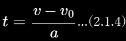速攻解決した、最高かよ...となりそうだがそうはいかない。ここで最終的な所要時間についての式を立ててみよう。
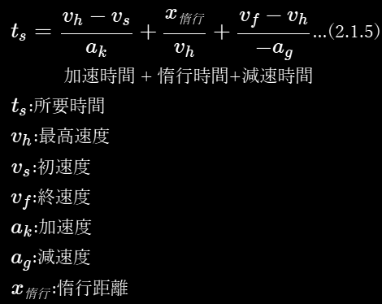tsは最終的に求まる所要時間だ。vh~agも車両や路線のデータを入力すればいい。あれ？x惰行(惰行距離)はどうしよう...
2.2.惰行運転する距離
そろそろ文に区切りをつけたかったので見出しをたてたが、惰行距離を求めることはすぐできる。単純に駅間距離から加速にかかった距離と減速にかかった距離を引いてやればいいのだ。ここで、(2.1.2)式を使いたくなりそうだがこの式で距離を求めるなら時間tが必要だ。しかしこの時間tこそ私たちが分からないので求めようとしている値であるためにこの式は利用しない。
ここで、(2.1.3)式を変形してみよう。
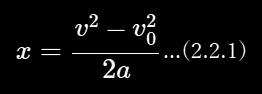よって、
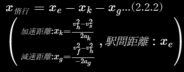できた。これで完璧なように思えるが、そうはいかない。そしてここに当機の目玉となるある機能が搭載されるに至った所以が存在するのだ。
2.3.最高速度自動切り下げシステム
もう字面からして最高の機能に違いない。なんせしょっぱなに"最高"とかついている。いやホントに便利な機能なのである、まじで。
さて、今までで組んだ式をv-xグラフにするとこんな感じになる。
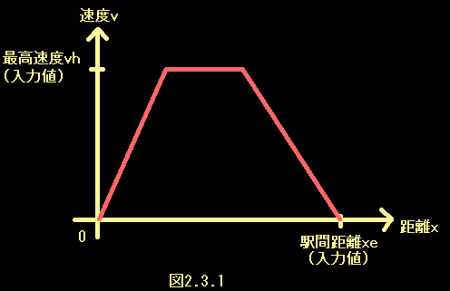さて、このようにユーザーが入力した最高速度まで加速、そっから惰行、減速までできればいいのだが...ここで駅間距離を少しづつ縮めてみよう。

最低だ。駅間距離が短すぎて入力した最高速度まで加速できない。駅間が短くなると最高速度にも限界値ができるのだ。この状況でエラーを吐くようにプログラムする手もあるのだが、それだと限界値を自分で目星付けるなどして入力しなおすのを繰り返さなければならない。でも私はそんなことやりたくない、めんどすぎる。なのでこの状況に至った時に最高速度を0.01m/sずつ切り下げるプログラムを組むこととした。
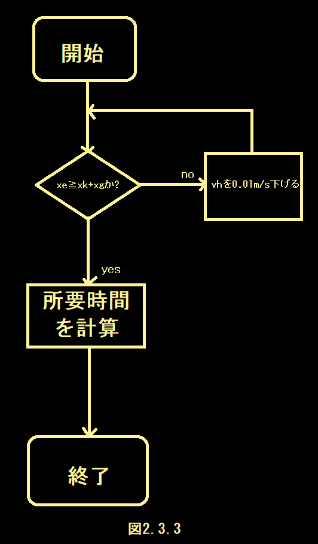分かりやすいようにフローチャートとやらにしてみた、なんかいい感じ。知らんけど。
しかし、このプログラムにも欠点がある。余りにも大きい値(10000km/hとか)を最高速度に入力されると切り下げの計算が終わらず処理が長期化、フリーズする場合がある。なのでくれぐれも最高速度は常識的な値を入力するようお願いしたい...
2.4.切り下げすぎてしまう(ver1.2)
さて、このように利便性のすごい高い自動切り下げ機能だが、使っているうちにどうも切り下げすぎてしまうらしいということを発見した。便利さゆえの悩みである、ああ贅沢...
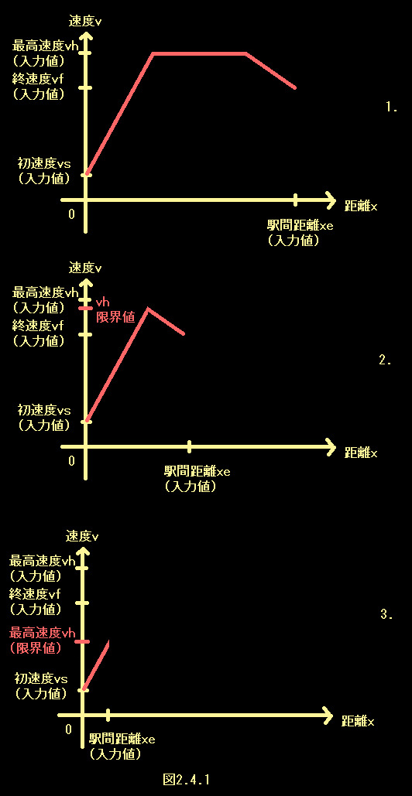図2.4.1、3番目のグラフのようになったときにどうなるかを考えてみよう。このまま計算した場合、(2.2.2)式に従えば、減速距離が負となってしまうのである。これはいけないのでエラーメッセージを表示するようにした。
ここで思った方もいるだろう。終速度(と初速度)にも自動切り下げシステムを導入すればいいのではないかと。そのとおりである。しかしこの当時は思いつかなかったのかまだ実装されていないのである。多分そのうち作る。(2025.5.30現在)
あともう一つ、このシステムでは0.01m/sずつ切り下げているがゆえに、厳密にいうと"真の限界速度からわずかに小さい値"を最高速度と近似しているということになる。つまり
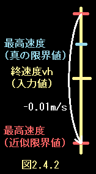このように真の値と最終速度の差がとても小さい場合に最終速度まで加速可能にもかかわらず切り下げすぎとなりエラーとなってしまう場合がある。これを防ぐためにエラー判定をするまえに最高速度=最終速度とした場合の加減速距離を計算するようなプログラムを組んだ。
2.5その他エラー
初速度や終速度にそもそも最高速度より大きい値が入力された場合もエラーメッセージが出るようにした。
2.6 根幹となる式の結論
この二つの式と最高速度自動切り下げシステム、各種エラーログで動作するバージョンであった。
3.勾配を考慮した式(ver2系列)
さて、基幹となる式とプログラム的な分岐は組むことができた。ここで次に考慮すべき事項は
1.勾配による影響
2.車両諸元にしばしば示されている起動加速度は速度が上昇した場合実際の加速度と乖離する点
この章では1番について解決するものとする。2番に関しては等加速度運動から外れてしまうため、当時高校生だった制作者には解決することができなかった。
3.1.勾配がある場合の減速にかかる距離の式
過去に制作していた架空鉄道にて、下り勾配に制限速度かかかる理由を調査していた一環で勾配がある場合の減速にかかる距離の式を発見した。発見の経緯などは長崎海浜鉄道に記載されている。
『鉄道電気技術者のための信号概論 閉そく装置』(日本鉄道電気技術協会、2008年4月)が引用されている『電車はブレーキをかけてから何mで停止できる？新幹線は？列車脱線事故の京浜急行電鉄は？』https://www.excite.co.jp/news/article/Bizjournal_202001_post_134461/ (梅原淳、2020年1月)によると、
S＝V1の二乗-V2の二乗÷7.2×（β+θ÷K）+t×V1÷3.6 [m]
V1は初速度（km/h）、V2は終速度（km/h）、tは空走時間（秒）、βは減速度（km/h/s）、θは勾配（パーミル）、Kは係数で電車による列車は31、機関車に牽引される客車による列車は30。
これを当機で使用する変数に置き換え整理すると、
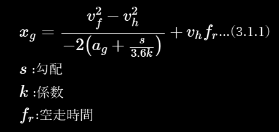ここで、(2.2.2)式のxgと見比べてみると、勾配によって減速しやすくなるため減速度に+s/3.6kが、距離全体に+vhfr(空走距離)がされているだけで、基本的には同様の形を保っていることがわかる。逆に加速について考えてみると、勾配によって加速しづらくなるため加速度に-s/3.6kがされ、ブレーキによる要素である空走距離は考慮しなくてよいため、
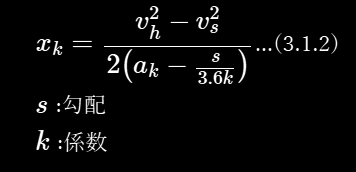となると考えられ、それぞれ(2.1.5)式と(2.2.2)式のak,agを置き換えることにより勾配と空走時間を含めた計算ができると考えられる。
ちなみに、当機では空走時間周りの処理を簡略化するために代わりに(速度^2の差分)/(空走時間も含めた加減速距離)から求める実質加減速度という指標を新しく設けVer1の式の加減速度に代入し計算しているが、同じことである。
3.2.急すぎる勾配により加速減速ができない場合
(3.1.1)式及び(3.2.2)式に従う場合、登り勾配において加速できない場合や下り勾配において減速できない場合が生じる。登り勾配の時はak-s/3.6kが、下り勾配の時はag+s/3.6kがそれぞれ0以下の場合に加減速ができないことがわかる。それぞれの場合においてエラーメッセージを表示する必要がある。
3.3.減速しない場合
(3.1.1)式に従う場合、減速しない場合でも減速にかかる距離が存在してしまう。そのため、vh=vfのときはxg=0とする処理を各段階に加えるべきである。
4.加速度が一定でないことを考慮した式(Ver5系列)
今までは加速時の列車が等加速度運動をするものとしてきたが、残念ながら列車の加速度は一定ではないのである、速度が上がるほど加速度は低くなる、くそったれ。当時高校生だった制作者には等加速度運動の領域を出た運動に関しては未知の世界であった。推測しようにも頭が足りなかった。
...しかし最近UIを改良した折に考え直してみたら、なんとなくいける気がしてきてしまったので考えてみよう。
※以下、制作者の推測的内容が今までより多く含まれます。くれぐれもご注意ください。
4.0.方針
列車の加速度が一定でないことについて様々調べているとおそらく起動加速度の値だけでなく、かなり本格的にやりこんでいる架鉄製作者しか考慮していなさそうな一般的に入手及び決定が困難な値が関与してくることは容易に察知することができるだろう。しかし、そのような値を正確に理解しツールに落とし込むのは製作者にとっても一朝一夕でできないような至難の技である()
しかも、そんなマニアック過ぎる値の入力を要求してしまっては(私自身を含め)大多数の架鉄製作者にとってこのツールは無用の長物、役立たずの木偶の棒と化してしまう！！
よって、ユーザーに要求する値をできるだけ増やさない方向性での改良を試みた。(実際この改良によってユーザーが新たに入力しなければならなくなったのは車両の設計最高速度のみである。)
4.1.運転曲線(v-t曲線)をもちいた近似
どのくらい加速度が低くなっていくのか、それを知るために実際の運行時のv-t曲線のネタになるようなデータを入手し、pythonで曲線近似する方法が考えられる。
そこで、スピードメータのついている前面展望を参考に時間と速度を取得する手法をとることにした。今回の数値取得にあたっては『【4K前面展望】福岡縦断！鹿児島本線 快速 久留米→博多→小倉【速度計·地図付】 4K FrontView Kagoshima Main Line Rapid Kurume-Hakata-Kokura』 https://www.youtube.com/watch?v=JdCgHFxTLSU (TrainView列車展望チャンネル、2022年7月)を参考資料とした。
今回は東郷駅発車後の加速時のデータを用いた。理由としては
1.連続的な加速範囲が最大級(0→104km/h)のため
2.勾配や曲線、分岐器の影響が小さいと見られたため
3.同様の条件が見られると思われた戸畑駅出発後より明らかに加速がスムーズであること(10秒ほど差がある)
があげられる。
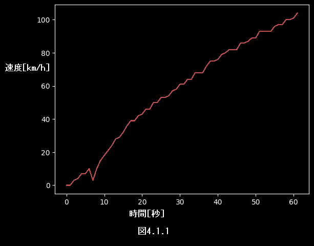図4.1.1は発車から最高速度到達までの1秒ごとの速度をプロットしたものである。一見直線近似したくなるものの、それだと等加速度運動になってしまい意味をなさないのでとりあえず二次曲線近似をしてみた。
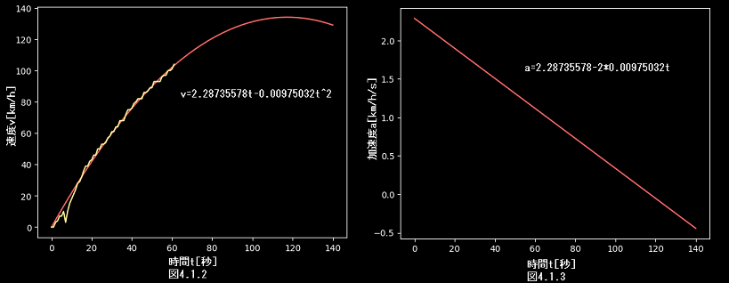出発直後のデータにおいて近似曲線との差が大きいのは速度計に用いられているであろうGPSの精度に起因するものであると思われるためここでは特に考慮しない。また、分かりやすいように微分したa-tグラフも描きだした。2次曲線の頂点における速度は約135km/hであるので、
初加速度:2.28km/m/s
加速度が0になる速度:135km/h
の等加加速度運動に近似されていることがわかる。ここで、このデータが計測された813系電車は
起動加速度:2.3km/h/s
設計最高速度:120km/h
である。以上のデータよりここでは列車の加速を"初加速度が起動加速度で設計最高速度より15km/h大きい速度において加速度が0となる等加加速度運動"、さらに"初加速度が起動加速度で設計最高速度より4m/s大きい速度において加速度が0となる等加加速度運動"に近似して考えるものとする。
4.2.等加加速度運動(等躍度運動)
計算に使用する式を直接導出する前に、2.1章のように基本的な式を列挙しておこう。まずは加加速度に対して時間積分を繰り返す。
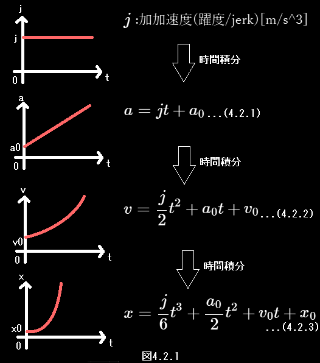よって、各式と定数j,a0,v0,x0の値が判明すれば各種値が求まる。
ここで、今までのバージョンで導出した式を応用するために必要な情報について考えてみると、初速度と最高速度を決めた場合に加速にかかる時間と距離が計算できる式が必要であるので、まず(4.2.2)式をtについて解くと、
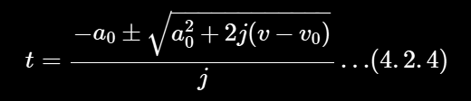となり、これを(4.2.3)式に代入すれば距離も初速度と最高速度から求まる。
4.3.等躍度運動へ近似
"初加速度が起動加速度で設計最高速度より4m/s大きい速度において加速度が0となる等加加速度運動"をv-t曲線に示すと
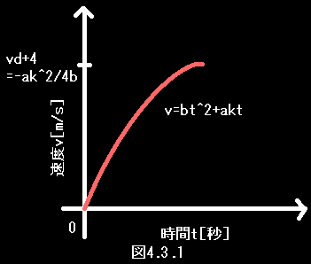よって、次式が成り立つ
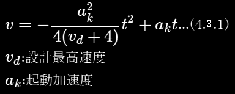時間微分すれば加速度となるため、勾配を考慮するため右辺からs/3.6kを引き、
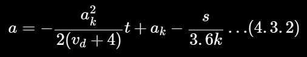となる。そして、t=0の時x=v=0より
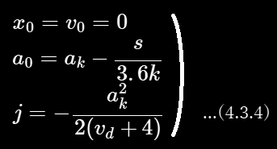また、j＜0のため、(4.2.4)式において±を+にした場合に図4.3.1v-t曲線の頂点より左側(今回使用する区間)の値、-にした場合は頂点より右側の値になる。よって±は+とする。
ここで、初速度vsから最高速度vhまで加速する場合の式をまとめると、
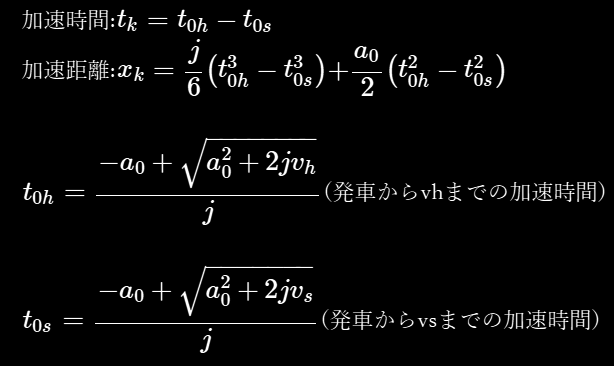となる。
4.4.減速時への適用について
先ほどと同様、今度は赤間駅手前で減速したときのデータをグラフに描画した。
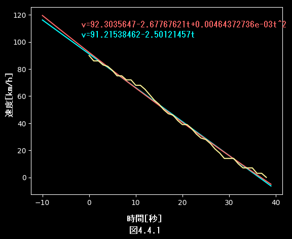黄色が元データ、赤が2次曲線近似、水色が線形回帰グラフであるが、ほとんど差がないことが見て取れる。減速度は概ね2.5km/h/s付近で一定である。そして813系電車の減速度は4.0km/h/sであり、あまり関係性が見えてこない。これはおそらく運転士が減速度が一定に近くなるようにブレーキを調節しているからだと思われる。よって、減速時には等躍度運動への近似は行わない。
4.5.加速できる最高速度が勾配により設計最高速度vdより低くなる可能性について
まず、加速できる最高速度は加速度が0となる速度のことである。そのため、(4.2.1)式を変形し、
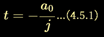とすることで、出発後何秒で加速が止まるかを計算でき、それを(4.2.2)式に代入することでその時の速度、すなわち加速可能な速度が求まる。その速度をvlとすると、
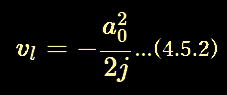これより、まず終速度より低い場合は「加速度補正と勾配の為vl(小数点以下は切り下げる)より高い速度を出すことができません、終速度をそれより低く設定してください」とエラーを表示し、初速度vsより低い場合にはそれ以上の加速ができない為最高速度vhを初速度vsまで引き下げ、そのどちらもにあてはまらないときで最高速度より低い場合最高速度vh=vlとしなければならない。その後通常通り計算処理を始める。
5.参考資料
1.『鉄道電気技術者のための信号概論 閉そく装置』(日本鉄道電気技術協会、2008年4月)が引用されている『電車はブレーキをかけてから何mで停止できる？新幹線は？列車脱線事故の京浜急行電鉄は？』https://www.excite.co.jp/news/article/Bizjournal_202001_post_134461/ (梅原淳、2020年1月)
2.『【4K前面展望】福岡縦断！鹿児島本線 快速 久留米→博多→小倉【速度計·地図付】 4K FrontView Kagoshima Main Line Rapid Kurume-Hakata-Kokura』 https://www.youtube.com/watch?v=JdCgHFxTLSU (TrainView列車展望チャンネル、2022年7月)